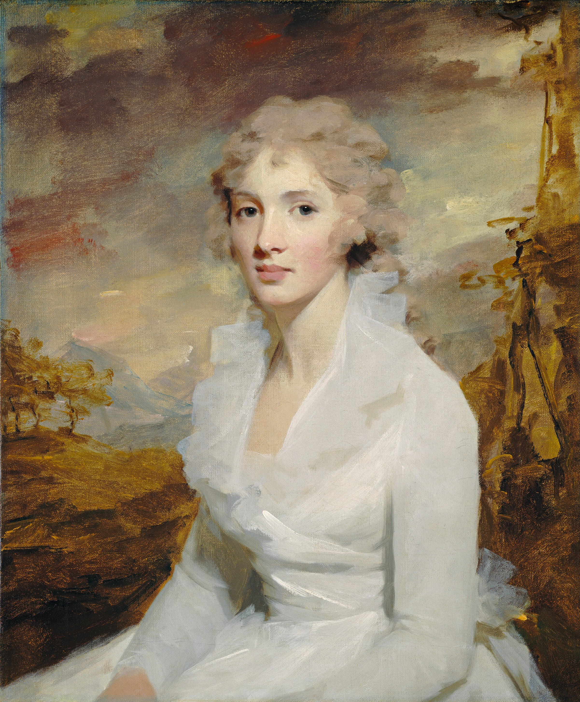

Writing a sentence test.
My first paragraph.
This site is about the paintings and artists Richard loves, as well as a way for Richard to practice coding.
If something seems out of place, it may be because Mr. Kozak is experimenting with something.
Enjoy the site.
This is a photo of a painting by Sir Henry Raeburn.
Her name is Eleanor Urquhart.
This is a haiku. That I amwritingtyping. But it doesn't work right.
Eleanor was born in 1822, and was said to be
Bad as hell ever since her late teens. By the time she was 21, she was certifiably one of the biggest cuties in Denmark. This was high praise, coming from King Arthur, who claimed to have the highest density of cuties in his capitol city, Denmark Jr. DMJ had so many cuties in fact, that in 1844, a pageant was held to ELIMINATE half of the cutie population. Starvation and cannibalism was wreaking havoc on Denmark Jr. The legend says that Eleanor murdered four separate women in order to maintain her hierarchy in the capitol.
This is a painting of Sargent's friend, Dr. Pozzi.


END OF THE PAGE